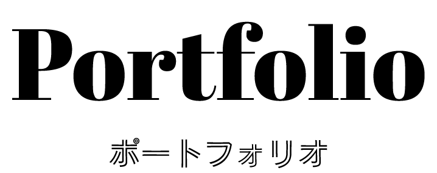
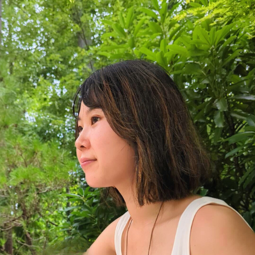
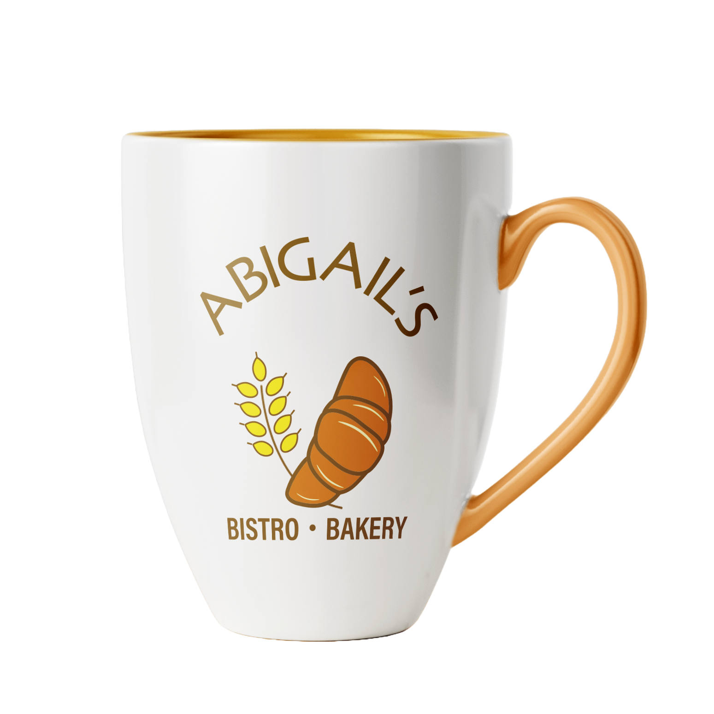
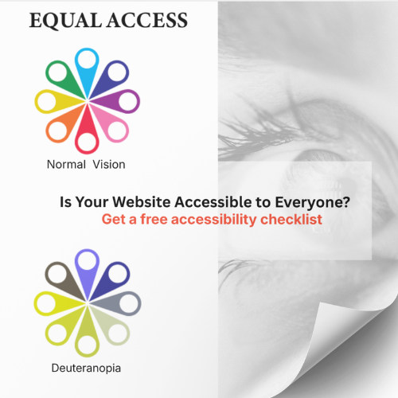
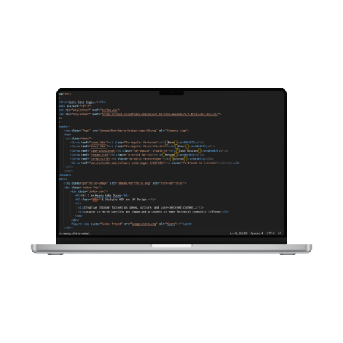

Hi!
I am Kaoru Sato Dugas
& Studying WEB and UX Design.
- Creative thinker focused on ideas, culture, and user-centered content.
- Located in North Carolina and Japan and a Student at Wake Technical Community College.

What I Focus On
-
User-Centered Design:
Creating intuitive digital experiences that unlock your users’ full potential.
-
UI Design:
Building modern, sophisticated interfaces that convey credibility and appeal.
-
Social Media & Branding:
Forging meaningful connections between your brand and its audience.
-
Logo Design:
Making your brand’s unique identity shine from the very first impression.
-
Accessibility:
Empowering more people to use technology with ease.
-
Culture:
Blending Japanese and American design sensibilities to craft experiences that resonate across cultures.
My Work - What I Can Do


